Bokeh is easily one of the most popular effects in photography, perhaps because it is powerful but simple to use. The bokeh effect comes from the Japanese word boke, which means blur or haze. It is the blur in a photo, or more precisely, the aesthetic quality of that blur. You create this blur by using shallow depth of field. Photographers often use out-of-focus areas to create striking light effects, or they simply single out one object and leave the rest of the image out of focus.
At first, you may want to use bokeh for everything. But like any technique, using bokeh does not guarantee that your photos will be stunning, and not every subject suits bokeh. For example, if you shoot a wide scene or a landscape, shallow depth of field will not work. But if you focus on a single subject, such as a cup or a candle, bokeh can prove a good choice.
How to Create Bokeh
To create bokeh, you need a camera (or lens) with an aperture and focal length you can adjust. The ideal setup is a DSLR or mirrorless camera with interchangeable lenses and a large maximum aperture (f/1.4 to f/2). If you use a smartphone, you can only fake the look through a special app or an in-camera effect. These fake effects can look cute, but they often need a little editing to look convincingly real. For now at least, a fast lens will produce better bokeh than any smartphone.
Basic Camera Settings for Bokeh
Aperture: First, set your camera to optimize the background. You need a wide aperture, such as f/1.4, f/1.8, or f/2. The aperture setting affects depth of field. In bokeh photography, you want shallow depth of field, which means a low f-number. This lets you apply blur to the background while the subject stays in focus. Set your camera to aperture priority.
Shutter speed: In aperture priority mode, you can let the camera decide the shutter speed, or use a custom setting of 1/50 second or faster. If the speed is slower than this, the background becomes too blurred and the round light effect is lost. This can darken the image, but do not try to use a higher f-number. Try raising the ISO instead.
Subject and lighting: If you can get close to your subject, you will find it easier to shoot the blur. Use zoom if you need to. You will also find that the background looks more natural when it is bright, such as with streetlights at night or sunlight behind the subject.
How to Create Bokeh Shapes
To get a background in a specific shape, such as a heart or a star, you can make a background filter, or buy a set that includes various shapes.
▲ Day 335 ©Ida Hollis
Bokeh Photography Subjects
Below are some subjects that suit bokeh photography well, along with 40 works to inspire your own bokeh shooting.
Portraits
Cats and Dogs
Insects
Flowers
Leaves
Grass and Mushrooms
Still Life
Lights
Portraits
Bokeh suits portraits well because it minimizes distractions and lets the viewer focus on the model. It can also beautify an ugly background. For example, you can turn a messy city background into a picturesque night scene with bokeh. This is one of many ways to make the most of a less-than-ideal location.
Bokeh can also be an effective way to add interest to a portrait that lacks eye contact, for example when the model turns away from the camera. Without that eye contact, the viewer is more likely to look at the rest of the photo. If the background is not especially interesting, you can use bokeh to make it more interesting and beautiful.
But some portraits are better without bokeh. For example, you may want to use the surroundings to tell a story about the person, or the other way around, and use the portrait to tell a story about the surroundings. In both cases, bokeh can get in the way of building that link and that story.
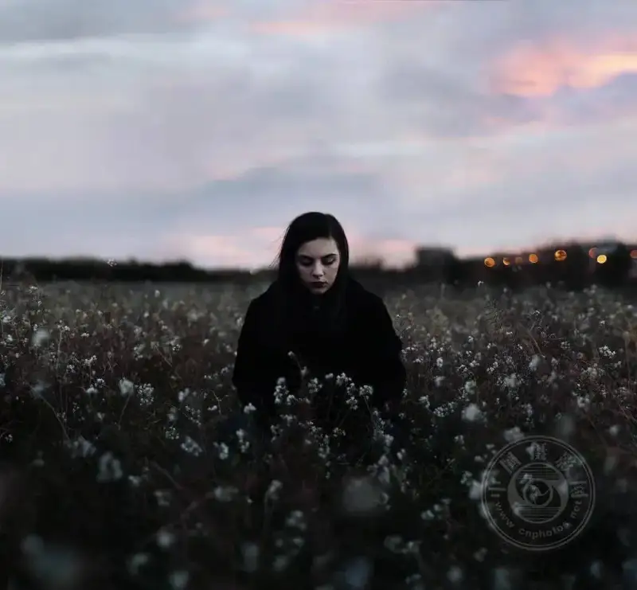
▲ So Colorful ©Sergio Cabezas
▲ Three & Tree ©Sean Lewis
▲ Alexandra ©Chiara Cremaschi
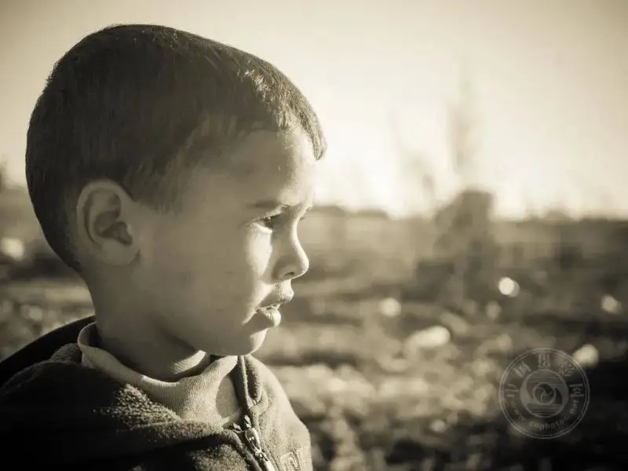
▲ Neighborhood Glow-3 ©Amine Fassi
▲ You Cannot Hide Me ©Sergio Cabezas
Cats and Dogs
The beauty of bokeh pairs well with the beauty of cats and dogs. Their soft fur and smooth shapes suit the softness of bokeh, and their alert eyes suit the roundness of bokeh light.
But beyond looks, bokeh also works for outdoor cat or dog portraits. Because many cats and dogs have neutral fur that blends into nature, they can camouflage themselves in outdoor portraits. By blurring the background and focusing on the cat or dog, you can make them stand out despite their camouflage.
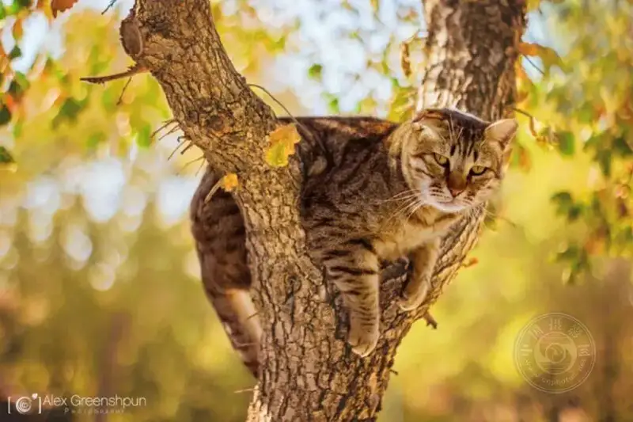
▲ They Said "Climb a Tree" ©Alex Greenshpun
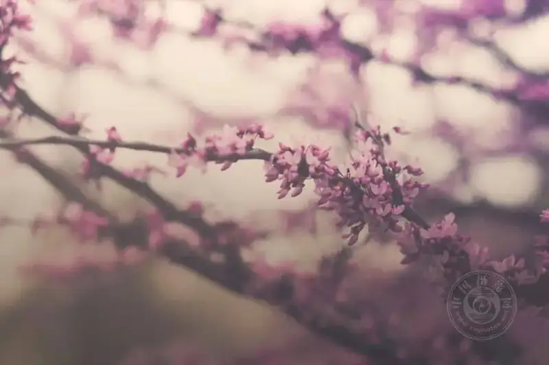
▲ kephoto ©Graciebokeh1KE
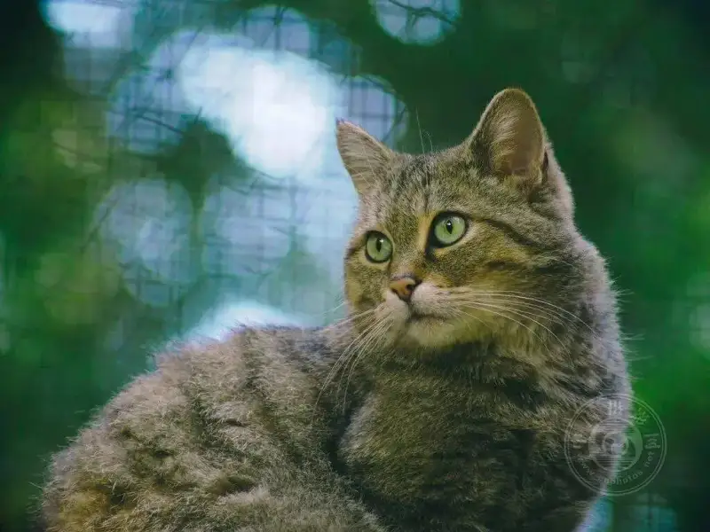
▲ Cat Bokeh ©Schleswig-Holstein
▲ Rock ©julian oh
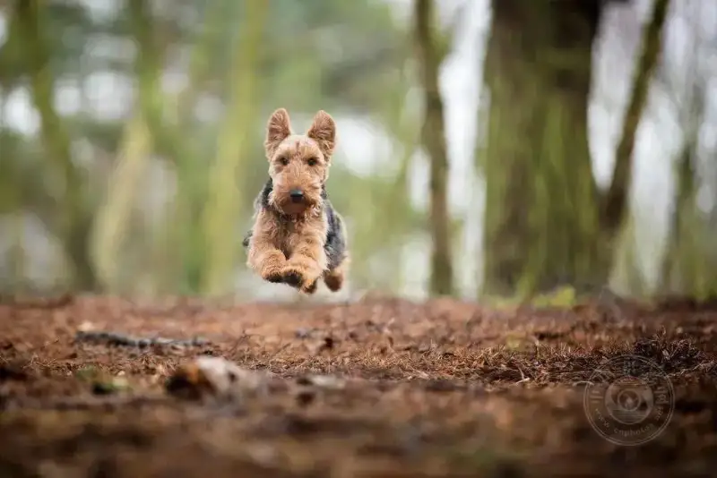
▲ Fly, Jesse ©James Drury
Insects
To shoot close-ups of insects, you can try macro photography, a technique that pairs well with bokeh. But even if you are not shooting macro, you can use bokeh to make a small insect in the surrounding leaves stand out more.
Bokeh can also add texture contrast to an insect image. If the insect you shoot has a hard shell, such as a ladybug or a beetle, that hardness contrasts with the softness of bokeh. At the same time, the roundness of the shell matches the roundness of the background light, so the two both complement and contrast with each other.
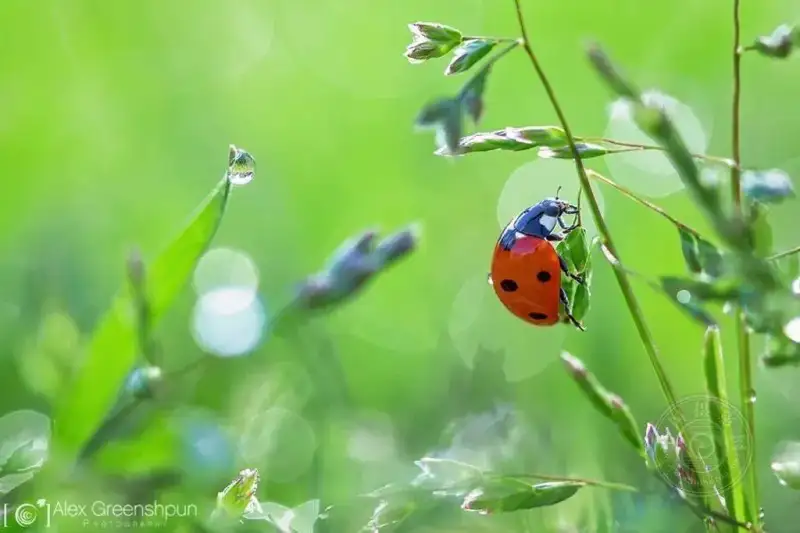
▲ Ladybug ©Alex Greenshpun
▲ Little Assassin ©Anne Worner
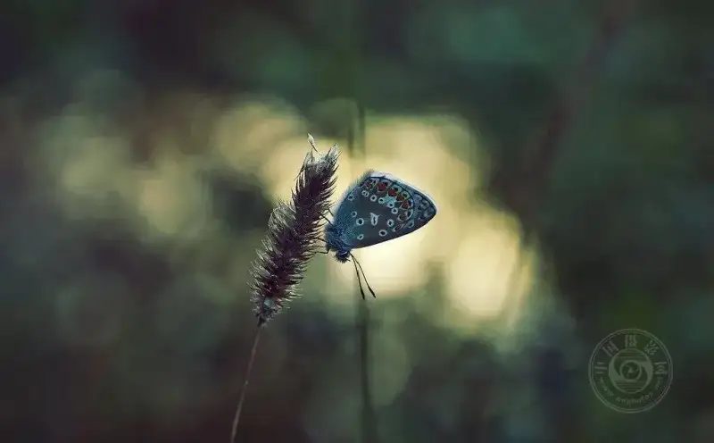
▲ The Last Visitor ©Gabriel Caparó
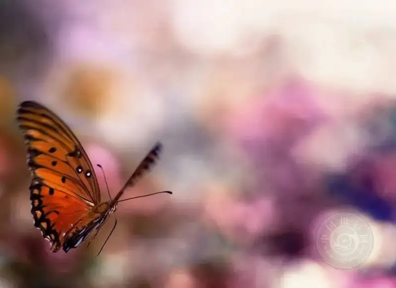
▲ Revisiting an Old Love ©Joel Olives
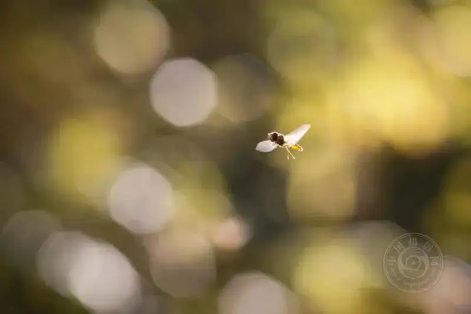
▲ Lost ©Amine Fassi
Flowers
Flowers are also one of the most popular subjects for bokeh photography. Beyond being lovely, flowers have a soft beauty that matches the aesthetics of bokeh.
Also, the background of a flower photo often suits bokeh well. Usually the background holds other flowers or green plants, and they blend together perfectly.
But take care not to overdo it. If the out-of-focus circles are too large, they pull attention away from the flower, especially when the flower is small. Smooth, blended bokeh is usually the better choice.
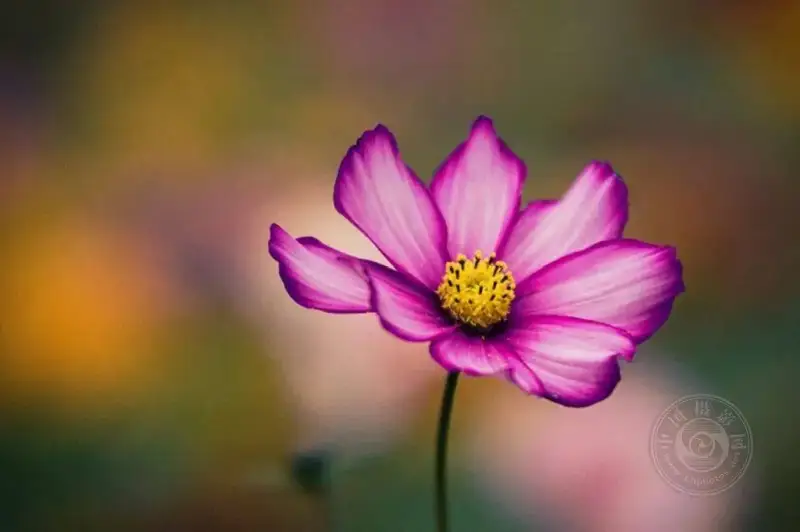
▲ Perfect Petal ©Bryon Lippincott
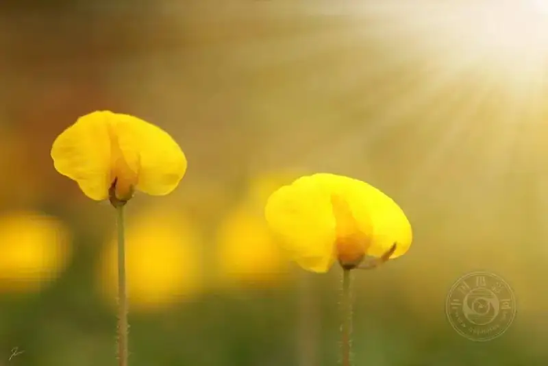
▲ Flowers II ©Wicaksono Trian Islami
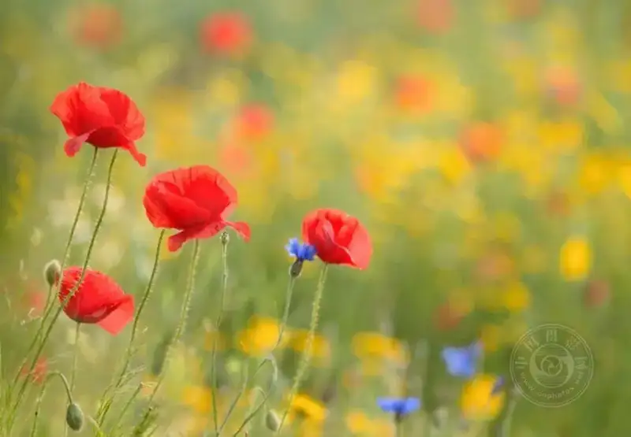
▲ Color Field ©Roelof de Hoog

▲ Sunday Morning ©jordan parks
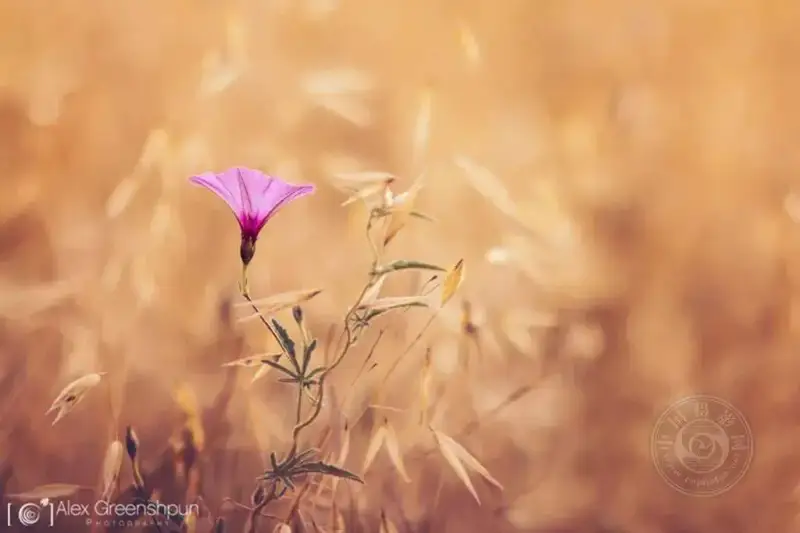
▲ One of a Kind ©Alex Greenshpun
Leaves
Like flowers, leaves often have a good background. But unlike flowers, you can easily move a fallen leaf or a branch to get the perfect light and composition. You can also use larger out-of-focus circles, depending on the leaf and the setup. For example, if the leaf is large and its color is dull, bright bokeh spots can add interest to the photo. In the same way, if there is a strong color contrast between the leaf and the background, you can add bokeh circles without pulling attention from the leaf.
▲ Falling ©Slavina Bahchevanova
▲ One Leaf ©Digic-Vision
▲ Natural Restraint ©Elizme
▲ ~Soft Rain~ ©Elizme
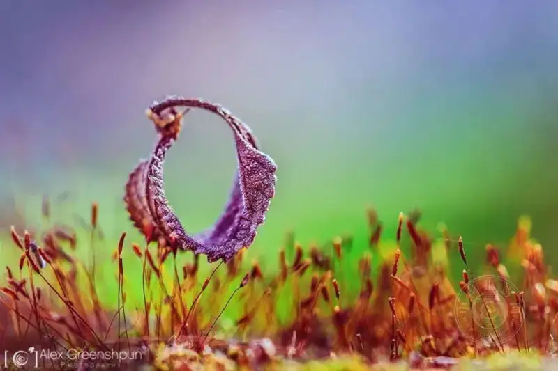
▲ The Voyage to Lilliput Continues ©Alex Greenshpun
Grass and Mushrooms
Grass can be a wonderful subject, especially when it glistens with dew in the morning. The dew forms lovely bokeh circles that contrast with the sharp blades of grass. You can also add other subjects to the grass, such as a pinecone or a small toy.
If you are lucky, you may even find some mushrooms in the grass. Mushrooms have a cute, unique look that suits close-up photos. With bokeh, you can bring out even the smallest mushroom, so the viewer can enjoy their strange beauty.
▲ Kissing the Sun ©Mariana
▲ Radiance-Joy and Hope ©Anne Worner
▲ Pinecone-1 ©Piotr Szczepankiewicz
▲ Jurassic Park ©Jette Baltzer
▲ Autumn Life ©Andreas Kretschmer
▲ Small Things ©Bastian_Schmidt
Still Life
Many good bokeh subjects tend to be outdoors, where the background is more colorful and interesting. But with still life photography, you can also shoot great bokeh photos indoors. Because a still life lets you place the subject and choose the background, you have endless options to create cool bokeh images.
When you choose a background for an indoor bokeh image, think about which objects and light sources blend best. Small lights, such as candles or Christmas lights, usually work well because they allow more out-of-focus circles. Something familiar and unique, such as a hand or a face, is also a good choice.
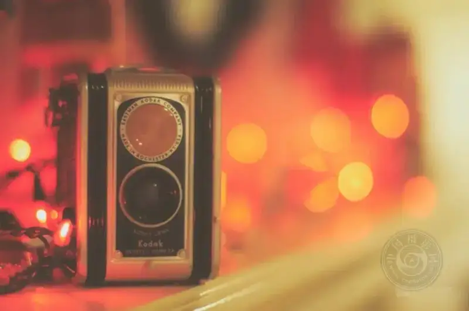
▲ Untitled ©jordan parks
▲ The Cafe ©Dave Fowler
▲ Sunday Bokeh ©Nathalie
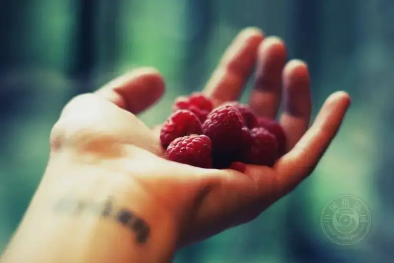
▲ Untitled ©Chiara Cremaschi
▲ Muslim ©Omair Haq
Lights
With the right background light, you can treat the background as the main subject and blur the whole photo. This works especially well when you shoot city lights. The light from night traffic, streetlights, and windows is so familiar that the viewer can picture the scene even when it is blurred. While they enjoy the background and the mood, they also feel the beauty of bokeh.
▲ Summer ©jordan parks
▲ Dear Forever, You Did Not Stay ©Tenia Prokalamou
▲ Bokeh ©Ludvigem
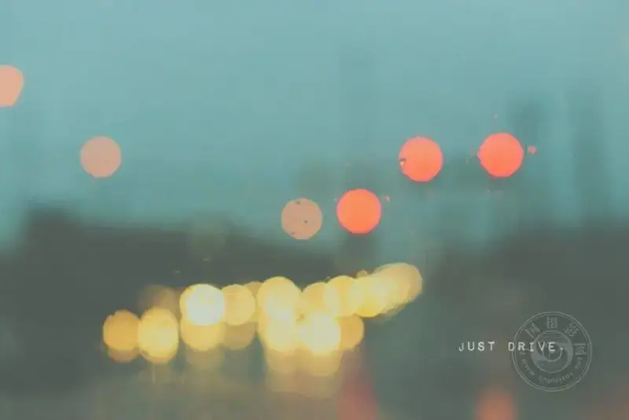
▲ Untitled ©jordan parks